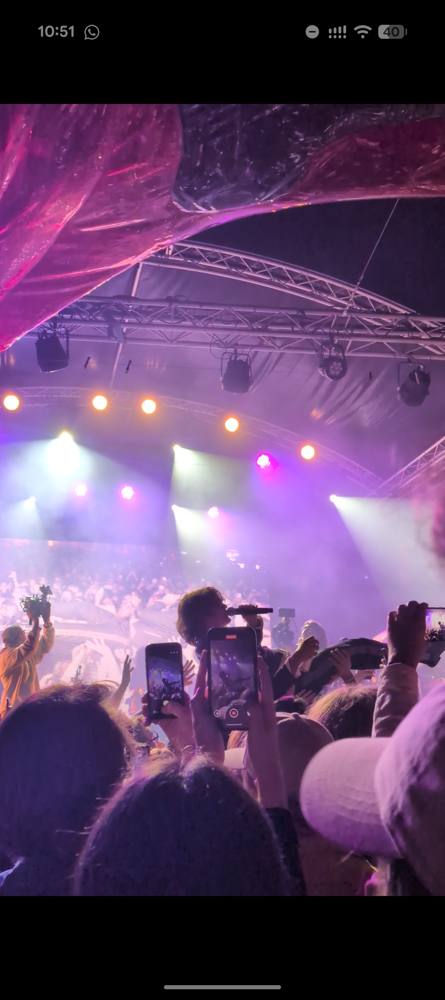

The followings photographs taken by me best describe me as a person. Take a look and a read through them to learn a bit more about me!
This is a picture of me! My friend took it of me summer of 2026 in Uppsala, where I live. I am half japanese and half iranian, which is something that influences who I am as a person. 1This is a picture I took in Amsterdam in 2025. I then drew over it. It depicts my creative side, as I am often also mixing various media. I took this photo winter of 2025/26, I often spend time in nature, despite the temperature. The image shows my adventurous side.

This is a photo from September 2026 in Stockholm. Listening to music is very important to me, unexpectedly loud and crowded concerts can make me feel calm and at ease. I took this image on a run in Japan back in 2024. Fitness is another aspects that is important to me, as I feel I need it to destress and feel good. Travel is something I very much enjoy, it fulfils my curiosity. This is an image I took in Shanghai in 2025. A photo I took whilst holding a beetle in summer 2026, near Uppsala. I love all creatures and have a lot of empathy for them. I have been vegan since 2015 and I think that is a big part of how I live life and see the world. A photo of my friend's dog that I took in summer 2026, in England. I often try to take a moment to appreciate and capture the sunset as I am always mesmerised by it. A photo of my friends in 2024 in Hong Kong. My friends and family are very important to me as they are my support system.